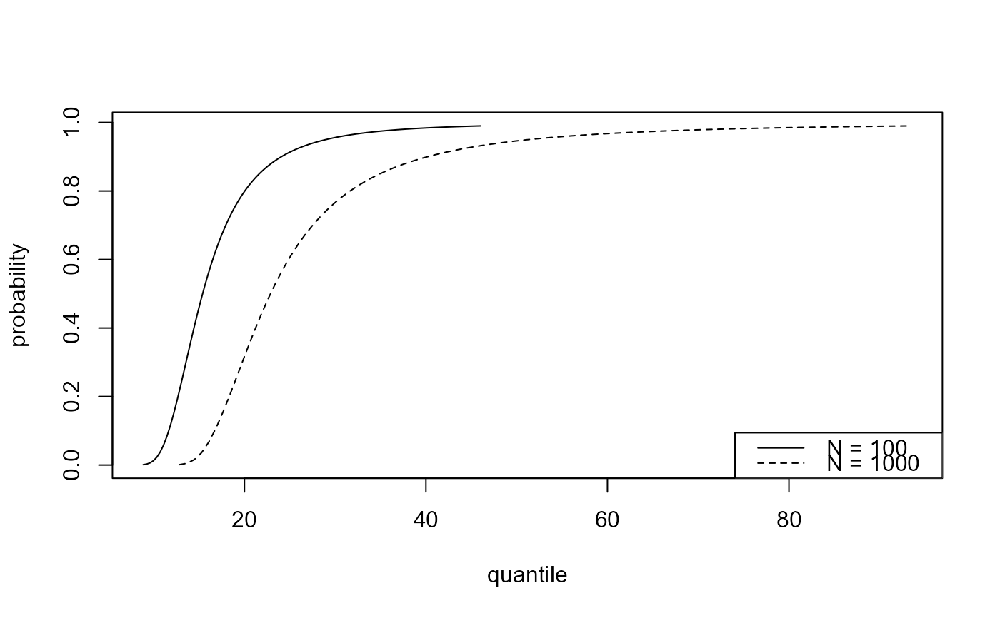
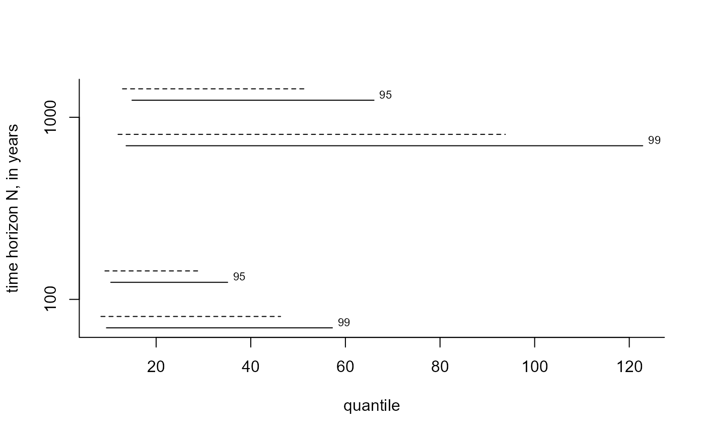
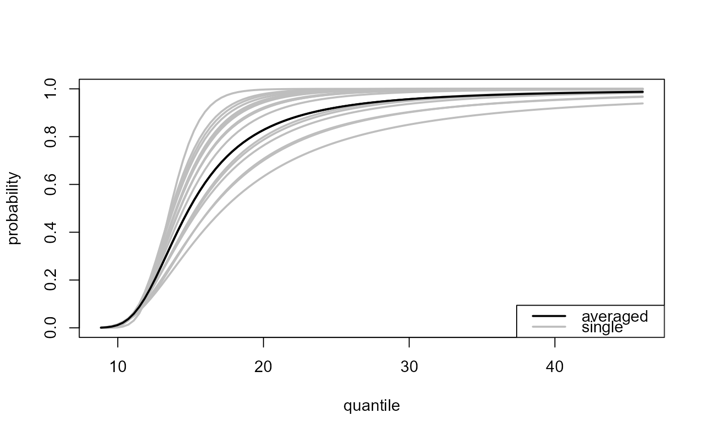
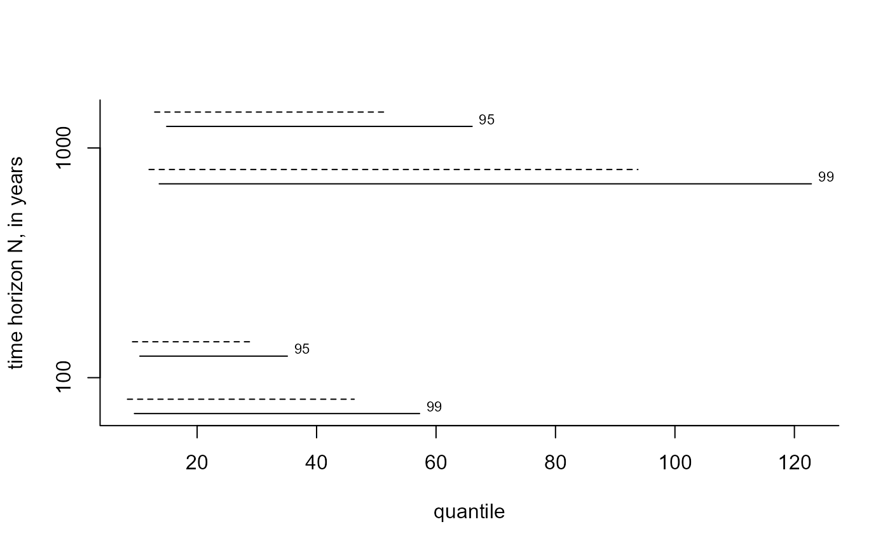
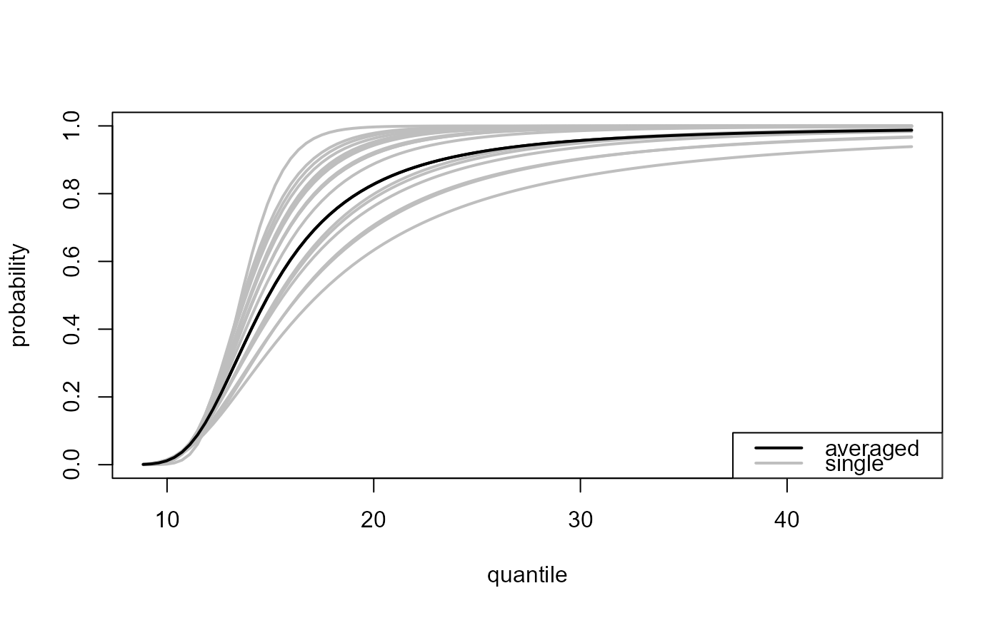

Predictive inference for the largest value observed in N years.
Source:R/predictive.R
predict.ithresh.Rdpredict method for class "ithresh". Predictive inferences can
either be based on a single training threshold or using a weighted
average of inferences over multiple training thresholds. A single
threshold may chosen to be the best performing threshold, as judged by the
measure of predictive performance calculated by ithresh or
chosen by the user. The weights used in the latter case are based on the
measures of predictive performance and prior probabilities assigned to the
training thresholds. By default all thresholds are given the same
prior probability but the user can specify their own prior.
Arguments
- object
An object of class
"ithresh", a result of a call toithresh.- npy
A numeric scalar. The mean number of observations per year of data, after excluding any missing values, i.e. the number of non-missing observations divided by total number of years of non-missing data.
- n_years
A numeric vector. Value(s) of N. If
which_u = "all"thenn_yearsmust have length one.- which_u
Either a character scalar or a numeric scalar. If
which_uis a character scalar it must be either "best" or "all".If
which_u = "best"then the single threshold achieving the largest measure of predictive performance inobject$pred_perf, based on the validation threshold selected usingwhich_v, is used to perform prediction. Seesummary.ithreshto print the best thresholds for each validation threshold.If
which_u = "all"then all the thresholds are used to perform prediction. The inferences from each threshold are weighted according to the posterior threshold weights given in equation (15) of Northrop et al. (2017) based on the prior probabilities of thresholds inu_priorand columnwhich_vof the measures of predictive performance inobject$pred_perf.Otherwise,
which_uis a numeric scalar that indicates which element ofobject$u_vecthe user wishes to select as a single threshold on which to base prediction, that is,which_umust be an integer in1, ..., length(object$u_vec).- which_v
A numeric scalar. Indicates which element of
object$v_vecis used in selecting a single threshold (ifwhich_u = "best") or weighting the inferences from all thresholds (ifwhich_u = "all"). Note: the default,which_v = 1gives the lowest of the validation thresholds inobject$v_vec.- u_prior
A numeric vector. Prior probabilities for the training thresholds in
object$u_vec. Only used ifwhich_u = "all".Only the first
length(object$u_vec) - length(object$v_vec) + which_velements ofu_priorare used. This is because only training thresholds up to and includingobject$v_vec[which_v]are relevant.u_priormust have lengthlength(object$u_vec)orlength(object$u_vec) - length(object$v_vec) + which_v.If
u_prioris not supplied then all (relevant) training thresholds are given equal prior probability.u_prioris normalized to have sum equal to 1 insidepredict.ithresh.- type
A character vector. Passed to
predict.evpost. Indicates which type of inference is required:"p" for the predictive distribution function,
"d" for the predictive density function,
"q" for the predictive quantile function,
"i" for predictive intervals (see
...to setlevel),"r" for random generation from the predictive distribution.
If
which_u = "all"then onlytype = "p"ortype = "d"are allowed.- hpd
A logical scalar. The argument
hpdofpredict.evpost. Only relevant iftype = "i".- x
A numeric vector. The argument
xofpredict.evpost. In the current context this must be a vector (not a matrix, as suggested by the documentation ofpredict.evpost). Ifxis not supplied then a default value is set withinpredict.evpost.- ...
Additional arguments to be passed to
predict.evpost. In particular:level, which can be used to set (multiple) levels for predictive intervals whentype = "i";lower_tail(relevant whentype = "p"or"q") andlog(relevant whentype = "d").
Value
An list object of class "ithreshpred" with a similar
structure to an object of class "evpred" returned from
predict.evpost is returned invisibly.
In addition, the object contains
u_vec = object$u_vec and v_vec = object$v_vec,
which_v and the index best_u in
u_vec = object$u_vec of the best training threshold based on
the value of which_v.
It also contains the value of the Box-Cox transformation parameter
lambda. This will always be equal to 1 if object was
returned from ithresh.
If which_u = "all" then
the list also contains the posterior threshold weights in component
post_thresh_wtsthe component
yis a matrix withlength{x}rows and 1 +length(object$u_vec) - length(object$v_vec) + which_vcolumns. Column 1 contains the estimated predictive distribution function (type = "p") or density function (type = "d") obtained using a weighted average of the inferences over different training thresholds. The other columns contain the estimated functions for each of the training thresholds inu_vec.
Details
The function predict.evpost is used to
perform predictive based on the binomial-GP posterior sample generated
using a given training threshold. For mathematical details of the
single threshold and multiple threshold cases see Sections 2.3 and 3 of
Northrop et al. (2017) respectively.
References
Northrop, P. J., Attalides, N. and Jonathan, P. (2017) Cross-validatory extreme value threshold selection and uncertainty with application to ocean storm severity. Journal of the Royal Statistical Society Series C: Applied Statistics, 66(1), 93-120. doi:10.1111/rssc.12159
See also
ithresh for threshold selection in the i.i.d. case
based on leave-one-out cross-validation.
plot.ithreshpred for the S3 plot method for objects
of class ithreshpred.
Examples
# Note:
#' In the examples below validation thresholds rather higher than is
# advisable have been used, with far fewer excesses than the minimum of
# 50 suggested by Jonathan and Ewans (2013).
# Gulf of Mexico significant wave heights, default priors.
u_vec_gom <- quantile(gom, probs = seq(0, 0.9, by = 0.05))
gom_cv <- ithresh(data = gom, u_vec = u_vec_gom, n_v = 3)
# Note: gom_cv$npy contains the correct value of npy (it was set in the
# call to ithresh, via attr(gom, "npy").
# If object$npy doesn't exist then the argument npy must be supplied
# in the call to predict().
### Best training threshold based on the lowest validation threshold
# Predictive distribution function
best_p <- predict(gom_cv, n_years = c(100, 1000))
plot(best_p)

# Predictive density function
best_d <- predict(gom_cv, type = "d", n_years = c(100, 1000))
plot(best_d)
 # Predictive intervals
best_i <- predict(gom_cv, n_years = c(100, 1000), type = "i", hpd = TRUE,
level = c(95, 99))
plot(best_i, which_int = "both")

#> Warning: argument 1 does not name a graphical parameter
# See which threshold was used
summary(gom_cv)
#> v v quantile best u best u quantile index of u_vec
#> 1 4.6070 80 3.1598 55 12
#> 2 5.1302 85 3.6545 65 14
#> 3 5.8246 90 3.6545 65 14
### All thresholds plus weighted average of inferences over all thresholds
# Predictive distribution function
all_p <- predict(gom_cv, which_u = "all")
plot(all_p)

# Predictive density function
all_d <- predict(gom_cv, which_u = "all", type = "d")
plot(all_d)
# Predictive intervals
best_i <- predict(gom_cv, n_years = c(100, 1000), type = "i", hpd = TRUE,
level = c(95, 99))
plot(best_i, which_int = "both")

#> Warning: argument 1 does not name a graphical parameter
# See which threshold was used
summary(gom_cv)
#> v v quantile best u best u quantile index of u_vec
#> 1 4.6070 80 3.1598 55 12
#> 2 5.1302 85 3.6545 65 14
#> 3 5.8246 90 3.6545 65 14
### All thresholds plus weighted average of inferences over all thresholds
# Predictive distribution function
all_p <- predict(gom_cv, which_u = "all")
plot(all_p)

# Predictive density function
all_d <- predict(gom_cv, which_u = "all", type = "d")
plot(all_d)